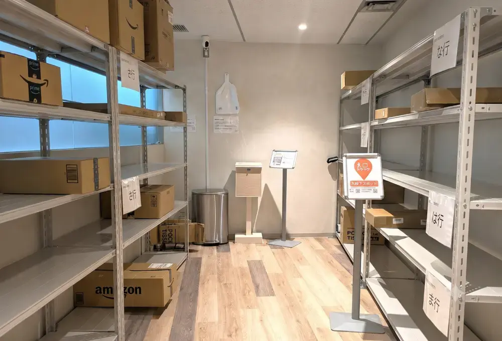

トリイクスポットへの配達方法
ドライバーの皆様、毎日配達ありがとうございます。
トリイクスポットは、お客様がご自身の自宅の代わりに配送先として指定された「地域の荷物受取スペース」です。留守による再配達の必要がなく、ここにまとめて置いていただくだけで配達が完了します。
ドライバーの皆様がスムーズに荷物を置いて次の配達に向かえるよう、使い方の手順やよくある質問をまとめました。
実際のトリイクスポット内の棚配置イメージ

トリイクスポットへの配達手順（3ステップ）
STEP 01
インターホンを押して入室する
ドアの横に設置されているインターホンを押してください。遠隔で鍵を解錠しますので、ドアを開けてお入りください。
STEP 02
五十音順の棚に荷物を並べる
室内には五十音順（あいうえお順）の案内が貼ってあります。荷受人様（お客様）のお名前の五十音に合わせて、指定の棚へ綺麗に並べていただくようご協力をお願いします。
STEP 03
配達完了の処理をして退室する
通常の配達と同じように、ご自身の端末で「配達完了（トリイクスポット着）」の処理（スキャンや必要に応じた写真撮影）を行い、扉を完全に閉めて退室してください。
スポット毎の配送注意事項
📍 イオンモールむさし村山
- 住所
- 〒208-0022 東京都武蔵村山市榎1丁目1-3イオンモールむさし村山1階トリイク
- 営業時間
- 10:00 〜 21:00
⚠️ 配送時の注意事項
ヤマト運輸と管内配送の契約をしている事業者は荷捌き場に荷物を置いてください。
配送ドライバーさま FAQ（よくある質問）
🔑 入室・カギ・営業時間について
スポットの鍵はどうやって開ければいいですか？
入口横にあるインターホンを押してください。遠隔で解錠します。
24時間いつでも配達して大丈夫ですか？
スポット毎に営業時間が異なります。24時間利用可能なスポットもあれば、商業施設内などで夜間・早朝は閉まっているスポットもあります。事前に各スポットの営業時間をご確認の上、時間内の配達をお願いします。
📦 荷物の置き方ルールについて
荷物はどこに、どうやって置けばいいですか？
室内の棚に「五十音順の案内」が貼ってあります。お客様がご自身の荷物を見つけやすいよう、必ず荷受人様のお名前の五十音に対応する棚へ置いてください。その際、伝票（ラベル）が手前に見えるように並べていただくようお願いします。
棚がいっぱいで荷物が置けない場合はどうすればいいですか？
無理に床などに積み上げず、問い合わせ先代表電話（0120-600-273）へご連絡いただくか、持ち戻りの対応をお願いします。
⚠️ お預かりできない荷物・トラブルについて
クール便（冷蔵・冷凍）や、代引きの荷物は置いていってもいいですか？
いいえ。お預かりできません。
クール便、代引き・着払い、セキュリティ便などは持ち戻り（通常通り個人宅へ再配達など）をお願いします。
クール便、代引き・着払い、セキュリティ便などは持ち戻り（通常通り個人宅へ再配達など）をお願いします。
インターホンが反応しない、電気がついていないなど、設備に不具合がある場合は？
すぐに問い合わせ先代表電話（0120-600-273）までご連絡ください。
トリイクからのお願い
1. 扉の閉め忘れにご注意ください
お帰りの際は、防犯のため扉が完全に閉まってロックされたことを必ずご確認ください（室内は24時間防犯カメラで監視されています）。
2. 丁寧な荷扱いをお願いします
お客様がご自身で取りに来られる大切な荷物です。棚へ置く際は、丁寧な配置をお願いします。